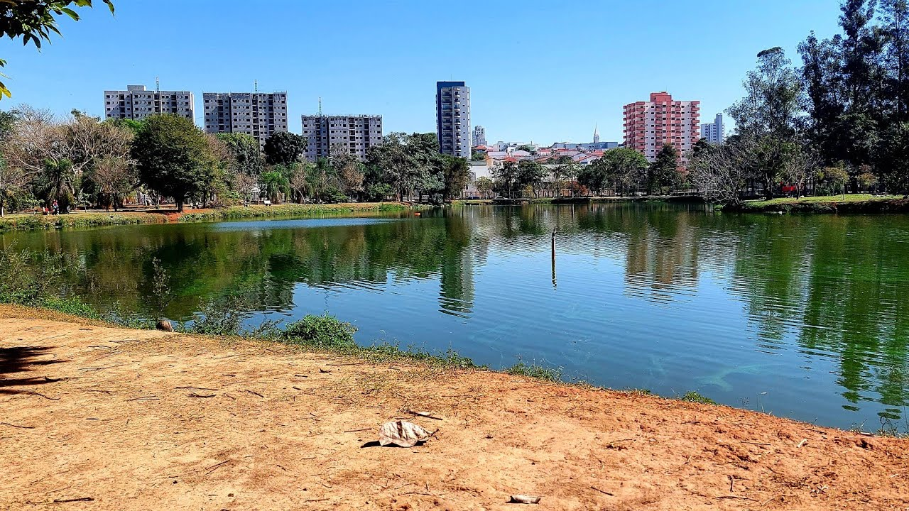

O que eu mais gosto em Santa Barbara D' Oeste
Comer no Rancho da Costela!

Um restaurante típico de fazenda. Além da consagrada costela "Mais Caminhos", ofertam deliciosos pratos, café premium e chopp de qualidade. Tudo isso em um ambiente campestre, sereno e acolhedor. Em atividade desde 1996.
Conheça mais sobre visitando o site.
Fazer um piquenique no Parque dos Ipês
Tanto no fim de tarde quanto aos fins de semana o Parque dos Ipês é sempre um bom local para passar tempo com a familia.
Descubra mais sobre o Parque dos Ipês no site.
Caminhar no Caminho dos Flamboyants

Se exercitar é sempre algo recomendável, ainda mais se for em um local agradável e perto da natureza.
Veja no mapa onde fica esse local.
E existem muitos outros lugares interessantes na cidade...
- O Bar Dona Beleza.
- Cemitério dos Americanos.
- A igreja matriz
- O Teatro municipal Manoel Lyra.
- O parque dos Jacarandás.
Um guia para você turistar em SBO! 🔥 🥶